Lead white
In the ground and through the paint; the lights of flesh and linen.

 Artemisia GentileschiSelf Portrait as Saint Catherine of Alexandria · c. 1615–17All 15
Artemisia GentileschiSelf Portrait as Saint Catherine of Alexandria · c. 1615–17All 15A studio guide · Florence, about 1615–17
Imagine you are Artemisia Gentileschi, in your early twenties, newly arrived in Florence from Rome with a husband, a studio and ambitions at the Medici court. This guide follows how this painting may have been made: a design traced from another self-portrait, a woman in a turban with a book under her hand, and then, late, a spiked wheel, a crown and a palm that turn her into a saint. Then it follows the canvas to a Paris auction room in 2017 and the National Gallery's studio in 2018.
The National Gallery studied the painting during its treatment in 2018 with X-rays, infrared imaging and paint samples, and found the book and the changes beneath the wheel; the Uffizi's own Saint Catherine, X-rayed in Florence in 2019, has a near copy of this figure underneath. How the design was transferred and the order of the changes are inferred. Each chapter opens with a note on its evidence. The slider steps through eight stages; stages 1 to 5 are AI reconstructions.
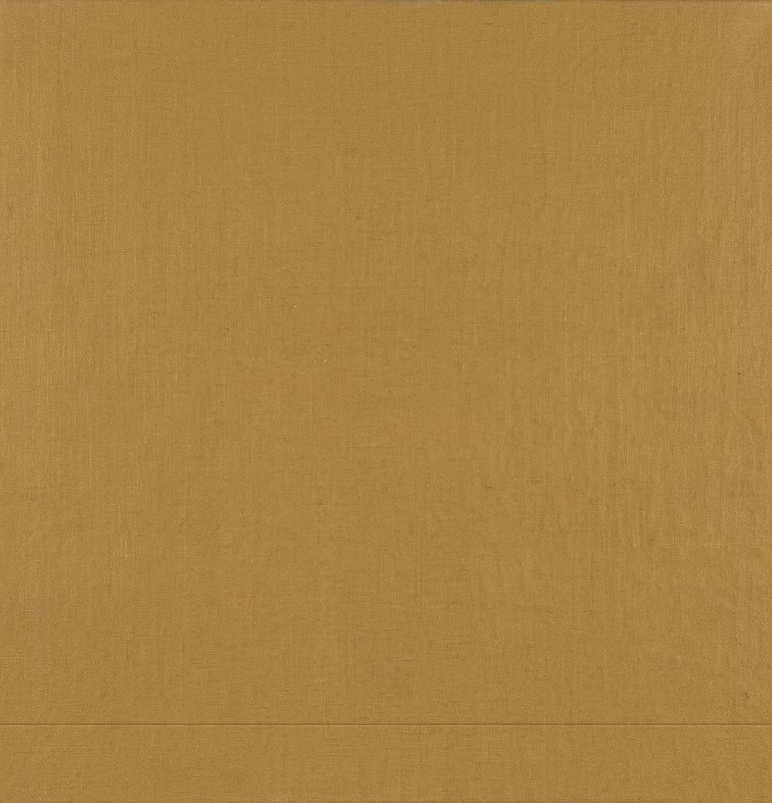
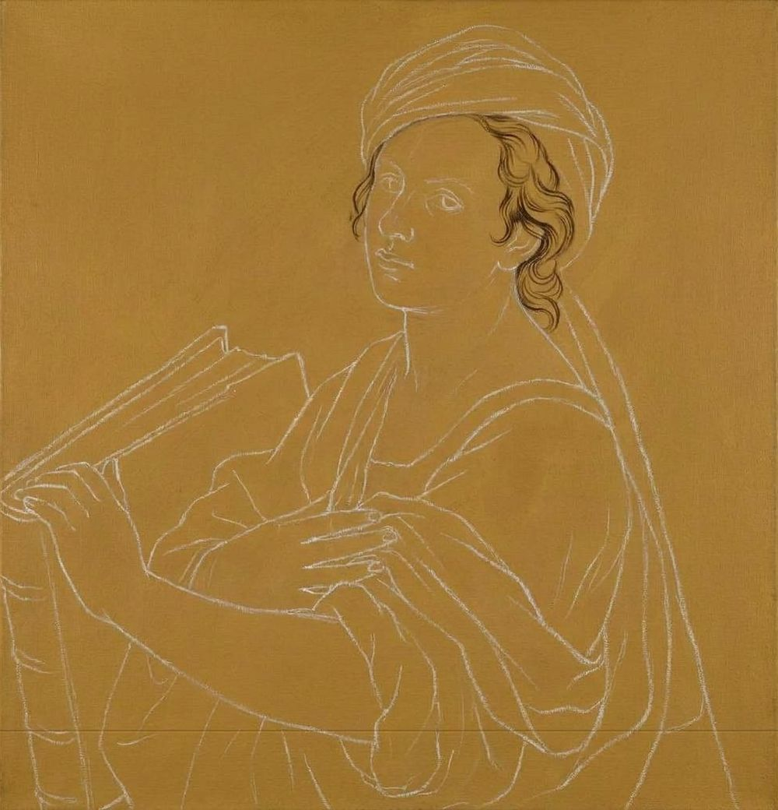
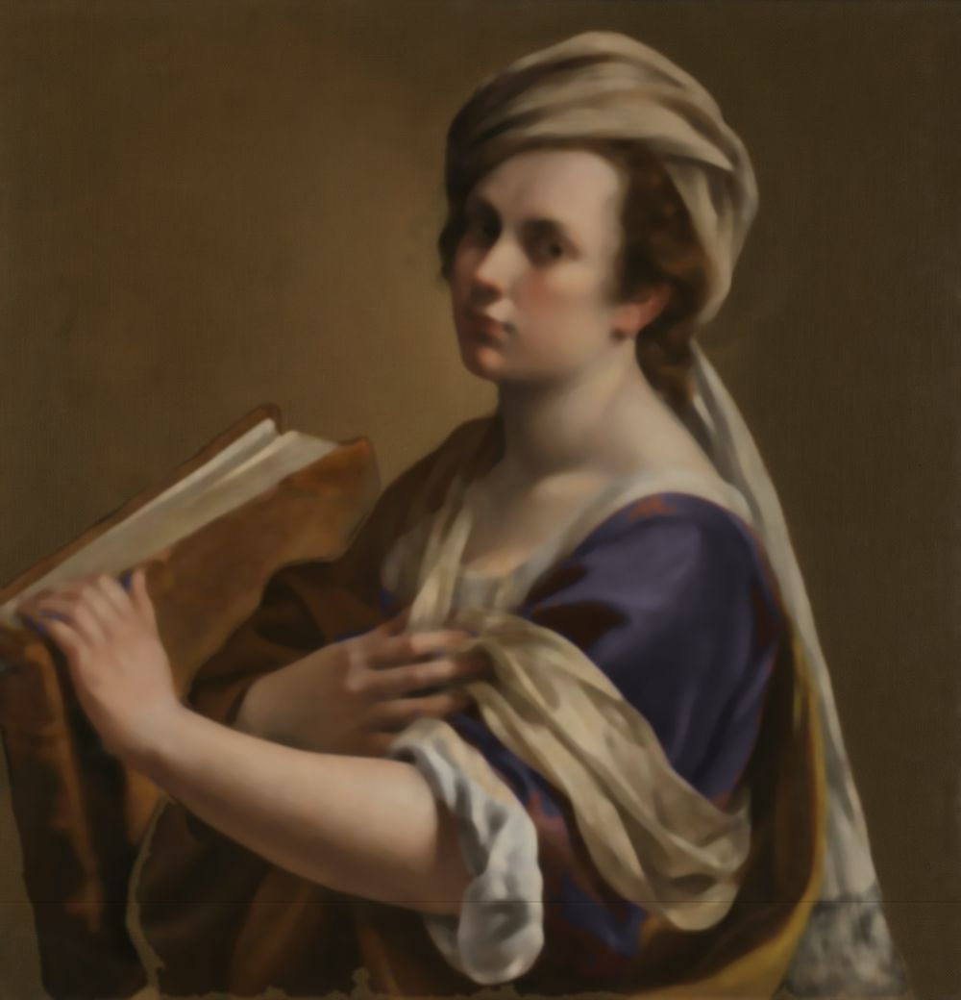
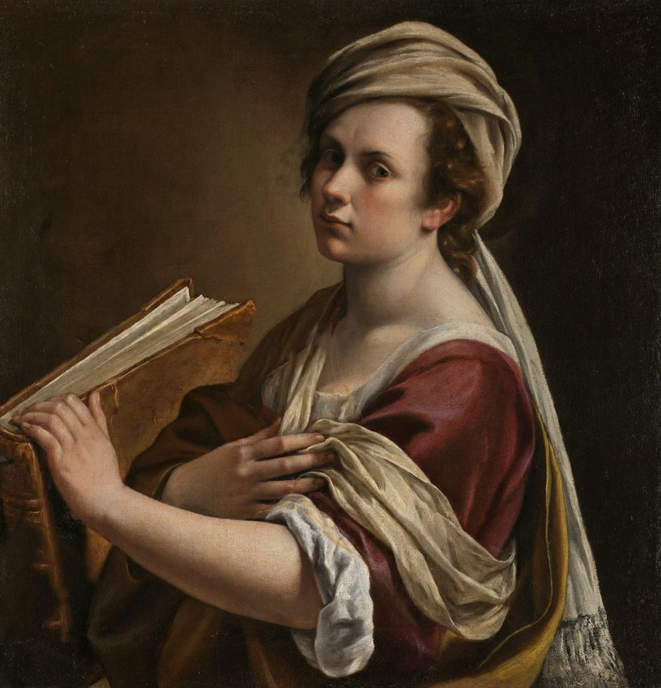
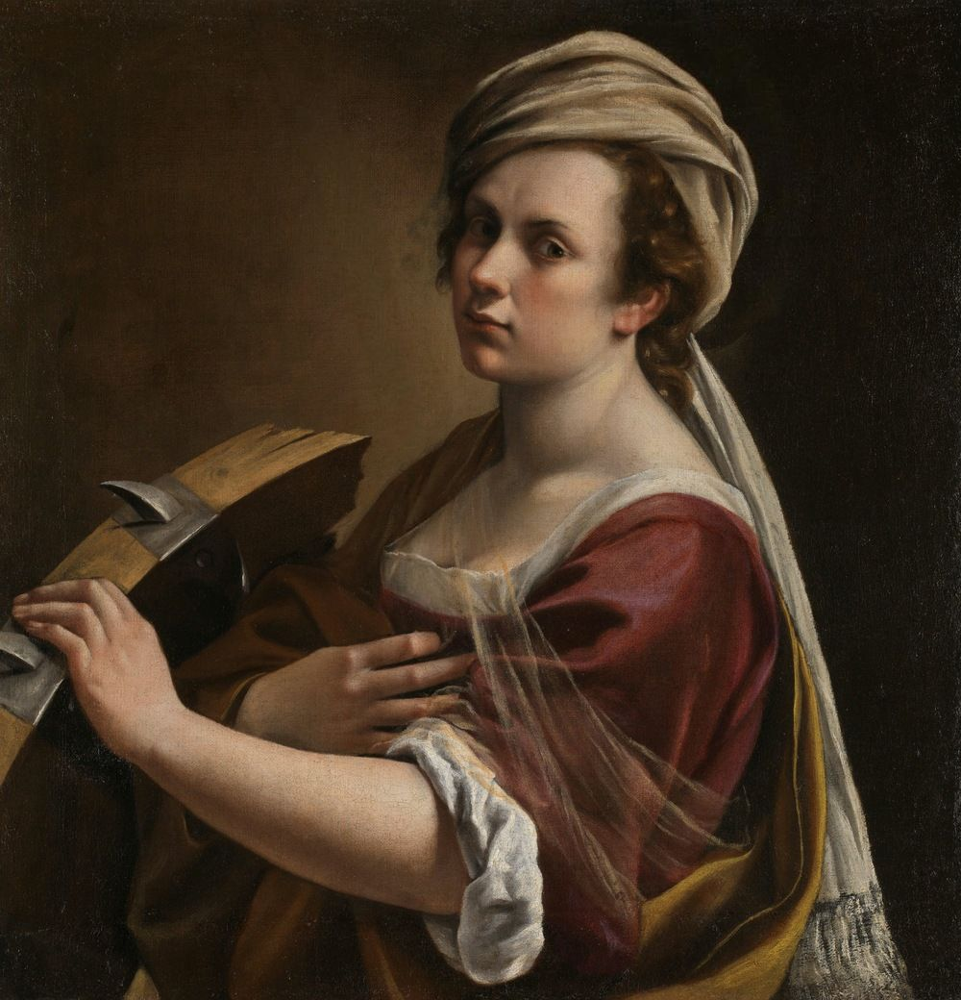
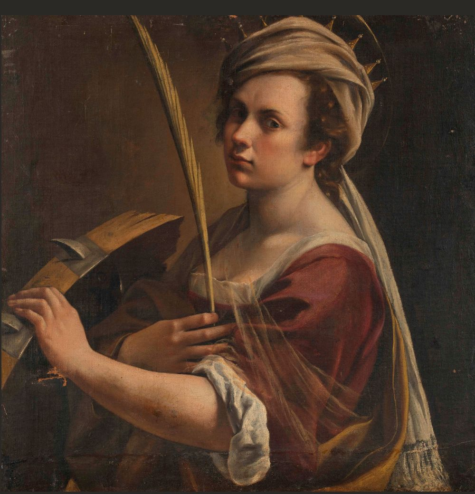
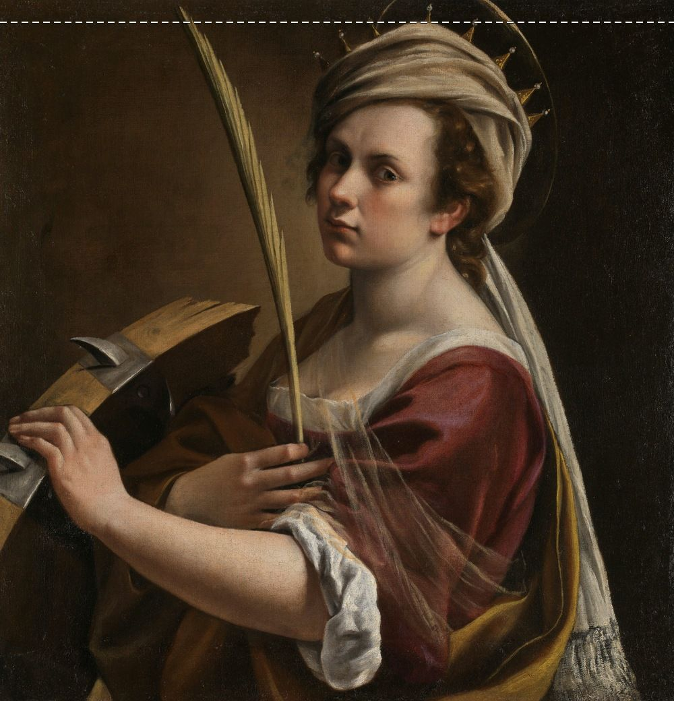
Today
Stage 8 of 8The painting today, 71.4 × 69 cm. Above the dashed line, a thin strip of new canvas added in 2018 to complete the crown and the palm.
EvidenceThe National Gallery's catalogue entry (2024) and its notes on the 1612 trial and the marriage documents; the dated Susanna. Your birth date and training are from standard biographies.
You are Artemisia Gentileschi, born in Rome in 1593, the eldest child of the painter Orazio Gentileschi. You learn to paint in his workshop. Among the shortcuts you learn there: keep a cartoon or a tracing of a figure and use it again on another canvas.
At about seventeen you sign and date a large Susanna and the Elders. In 1612 the painter Agostino Tassi, your father's collaborator, is tried in Rome for raping you and is convicted; during the trial you are made to confirm your testimony under judicial torture, with cords tightened round your fingers.
On 29 November 1612 you marry Pierantonio Stiattesi, a Florentine, in Rome. Within weeks the couple moves to Florence.
EvidenceThe National Gallery's catalogue entry, drawing on Sheila Barker (2021) for your addresses, the Academy's records and the Casa Buonarroti payments. Where in your house you painted is not recorded.
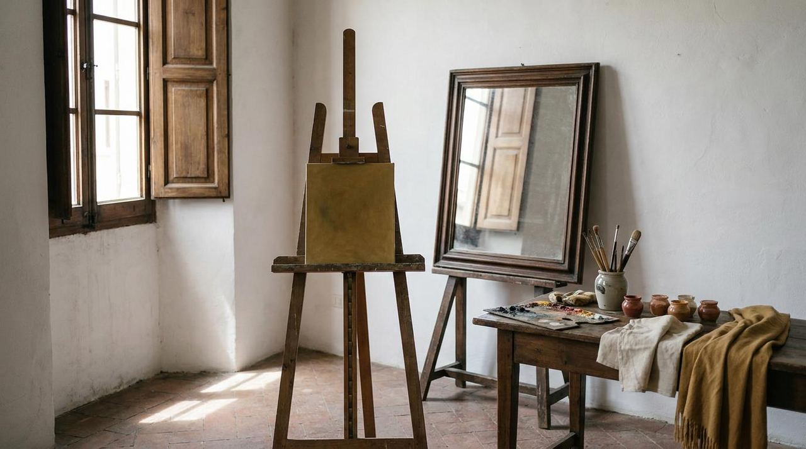
You set up a studio almost at once in the house of your father-in-law, the tailor Vincenzo Stiattesi, on the via del Campaccio near San Lorenzo; after his death in 1615 you move to Borgo Ognissanti. In Florence you learn to read and write, and you make friends who matter: the poet Michelangelo Buonarroti the Younger, great-nephew of the sculptor, who stands guarantor for you and commissions a ceiling painting for his house; the painter Cristofano Allori, godfather to your son Cristofano, born in November 1615. Through the Academy you come to know Galileo.
On 19 July 1616 you are enrolled in the Accademia delle Arti del Disegno, one of the first women in its fifty years. You look for Medici patronage, perhaps through the dowager Grand Duchess Christina of Lorraine, and paint a Judith beheading Holofernes for Grand Duke Cosimo II.
Who paid for this painting, or whether you made it to sell, is not known. Its origins, and those of many of your Florentine works, are lost.
EvidenceThe National Gallery's catalogue entry; the Medici inventory of 1638; Jérôme David's engraving and Simon Vouet's portrait of you, which fix your features. That you used a mirror is general practice and your own later complaint about models' fees.
In your first Florentine years you paint yourself again and again, sometimes as yourself and sometimes in a part: a martyr with a palm, a musician with a lute, a warrior in a helmet, now lost. A mirror is cheaper than a model; years later you will complain of the “intolerable expense” of models. And a woman painter's face is something collectors want.
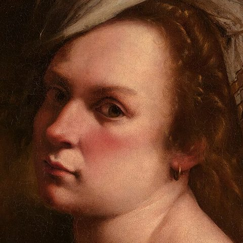
The lute player's head.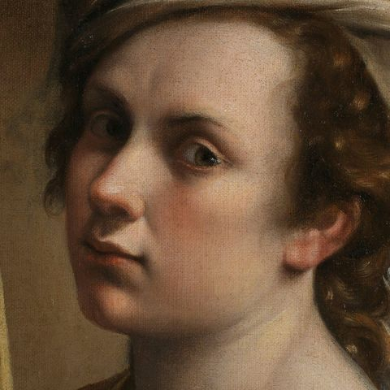
This painting's head. Tracings of the two align, the National Gallery found.EvidenceThe National Gallery's catalogue entry (2024): X-radiograph, thread count, paint samples and XRF scanning; the Getty's Conserving Canvas (2023) on the seam. Many pigments were identified by XRF scanning only.
The canvas is small, about 71 by 69 centimetres, and made of two horizontal strips of medium-weight linen: a narrow one, about 7 centimetres wide, along the bottom. They could have come from the same roll. The join is uneven and wavy; the conservator who relined it thinks you sewed it yourself, perhaps from cloth you had to hand.
The strips are joined, then stretched hard: the X-radiograph shows the threads pulled into scallops. A thin layer, probably animal glue with a little calcium sulphate and some black and red pigment, fills the gaps in the weave. Over it goes a yellow-brown ground of yellow earth with plenty of chalk, some lead white and a little umber and black.
You never leave that ground bare in the finished picture, but it shows through enough to warm the shadows and deepen the middle tones.
Pigments found by the National Gallery in 2018–19. The swatches approximate each pigment's colour in oil; the cards say where it was found and how.
In the ground and through the paint; the lights of flesh and linen.
In the flesh, and in the red that draws your features and ear. Scarcely in the dress.
Translucent reds; the top glazes made from cochineal insects, now somewhat faded.
Colourless, ground fine and mixed into the first red glazes of the dress.
A copper blue, mixed with red lake and white for the cool underlayer of the dress.
An unusual artificial yellow, first found in paintings made in Rome.
The commoner yellow, in the crown and the flesh.
In the ground, the shawl, the background and the flesh.
A translucent yellow in the shawl's shadows, now much faded.
A brown earth with manganese; it covers the shape under the wheel, and models the hair.
Unidentified, in the palm's darker tones and, a little, in the background.
In the shawl, the hair and the darkest shadows.
EvidenceThe National Gallery's tracings and overlays (Keith and colleagues, 2019); infrared reflectography and short-wave infrared imaging. No transfer lines have been found on this canvas: the method is inferred from the comparisons.
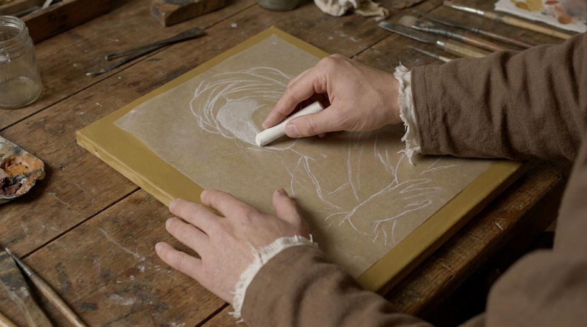
Lay a tracing of your lute player over the new canvas. Tracings made by the National Gallery show the two heads align exactly; the shoulders do not, unless you shift the tracing. So the design went over in parts, and your neck comes out longer.
No transfer lines have been found: they may be hidden under the paint, lost as you painted, or drawn in something that X-rays and infrared cannot see, such as white chalk.
Infrared shows only a few fine painted strokes: the curls over your ear and, at the left, a shape beneath where the wheel is now. The dark lines along the turban and the neck are contours you refined as you painted.
Below the shoulders you invent as you go: the sleeve's white turn-up, the cloth over your chest, the shawl's folds.
Your father reused cartoons, and so do you: your two great Judith paintings, in Naples and in Florence, share one design, with the second made from a cartoon or tracing of the first. Here a self-portrait made for one purpose becomes the starting point for another.
The National Gallery's own figures, the infrared images, the X-radiograph and the overlays of the tracings, are under copyright and are not reproduced here. They are in the catalogue entry listed under Sources.
EvidencePaint samples (cross-sections, SEM-EDX) and XRF maps, in the National Gallery's catalogue entry; the medium is heat-bodied linseed oil. The layers are documented; the order of the three steps here is inferred.
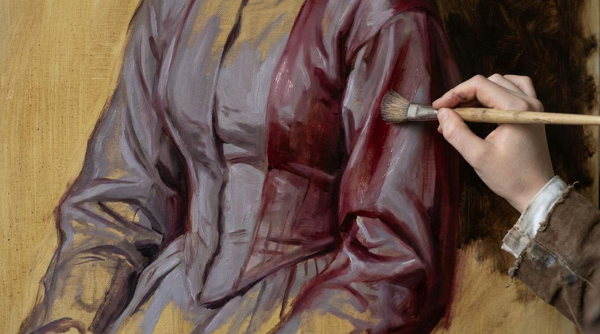
The samples show how each part was built up, layer by layer. The map beside the steps shows the picture laid in (imagined), worked up (imagined) and finished; the numbers mark where each step happens.
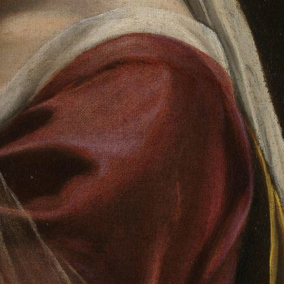
Lay the whole dress in first with a cool purple: finely ground azurite and red lake with lead white, a little black and a touch of yellow earth. It will give the red its crimson cast and the shadows their depth.
Over it, glaze the shadows with red lake mixed with colourless powdered glass and a trace of vermilion. Add lead white to the same mixture for the first pinks of the lit folds.
Then work up and down the folds in opaque pinks and translucent reds, and finish with glazes of a lake made from cochineal insects. Those top glazes have faded a little since; the red was once brighter.
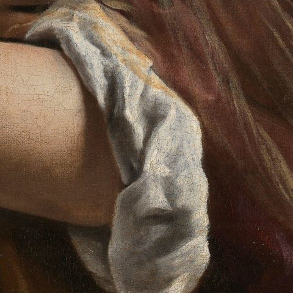
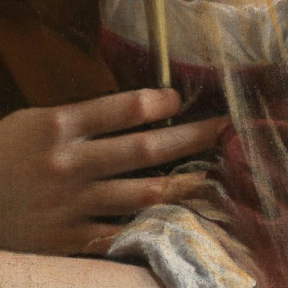
Paint the flesh opaque and smooth: lead white with vermilion, lead-tin yellow and earths, with a little umber in the shadows. Define the features and the ear with a red that contains vermilion.
Let the yellow-brown ground do some of the work under the half-tones: it is never left bare in the finished picture, but it warms and deepens everything above it.
Your hair is umber with touches of black and white. A few curls were set down early in thin strokes of paint; infrared shows them over your ear.
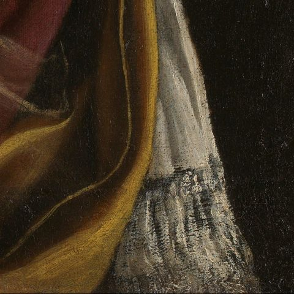
Paint the shawl in a brownish yellow of yellow earth with a little black, umber and red earth. Glaze its shadows with a yellow lake, now much faded; it was once a deeper yellow.
Put the highlights in with lead white and lead-tin-antimony yellow, an unusual artificial yellow first found in paintings made in Rome. The same pale yellow, with white and yellow earth, makes the sheer veil across your body.
EvidenceInfrared and short-wave infrared images, and XRF maps of iron and manganese, in the National Gallery's catalogue entry. That the figure began as a sibyl is the Gallery's hypothesis; why it changed is not known.
The imaging shows that the picture began as something else. Under the wheel is a shape, “perhaps a prophetic tablet or, more probably, a book”, which you then covered with a dark paint containing umber. Some of the turban's cloth first fell across your chest, held under your right hand. The headcloth, the book and the pose suggest a learned woman, perhaps a sibyl, the prophetesses of antiquity; or the book was Catherine's from the start, for her learning.
Then you change course. You paint a broken wheel studded with iron spikes over the covered book and part of the background, the instrument of Catherine's torture, and bring the yellow shawl over its edge. Last come the signs of a saint: a gold crown with eight pearl-tipped points, sitting a little awkwardly on the turban; a halo; and the palm of martyrdom, pinched between your thumb and forefinger like a brush, painted over the drapery and the background.
Catherine of Alexandria was a learned princess who, in the legend, out-argued fifty philosophers, refused the emperor, survived the spiked wheels and was beheaded. Whether a client asked for a saint, or you made the change to sell the picture more easily, is not recorded.
EvidenceThe Opificio delle Pietre Dure's examination of the Uffizi painting (Frosinini and Reginella, 2019), as reported in the National Gallery's catalogue entry and the press; that study was not read for this guide.
The Uffizi has another of your Saint Catherines: the same pose, the left arm out on a wheel and the right hand holding a palm to the breast, a red dress and a yellow shawl; but a different woman's face, raised to heaven, under a jewelled crown. Some think she is Caterina de' Medici, the Grand Duke's sister.
When the Opificio delle Pietre Dure in Florence X-rayed it in 2019, a figure appeared underneath: a woman in a turban, looking out, almost identical to this one. Traced from the X-ray and laid over the London picture, its head and turban match almost exactly, and so do the arms and drapery once the tracing is moved a few centimetres. A third, smaller woman's head is in the X-ray as well.
So you traced this figure, or its design, onto a second canvas and painted it well on before turning it into a different saint with a different face. The Hartford, London and Uffizi pictures were made close together, perhaps on your easels at the same time. Your lute player hides a secret too: an X-ray shows a woman's head upside down beneath it, from an earlier picture you turned round and painted over.
EvidenceThe National Gallery's catalogue entry (provenance, condition and the 2018 treatment); Lynne Harrison in Conserving Canvas (Getty, 2023); the prices are from press reports.
Nothing is known of the painting from your studio until the twentieth century, when a French family, the Boudevilles, owned it. It had been lined onto a new canvas, probably in the nineteenth or early twentieth century; its folded right edge had been opened out and its top edge trimmed, cutting the tip of the palm and one point of the crown.
When the National Gallery bought it there was a tear about 4 centimetres long at lower left, a bulge above the crown, losses along the top and the seam, yellowed varnish and old retouching. In 2018 the conservators took off the varnish and the retouching, repaired the tear, relined the canvas and retouched the losses. They added a thin strip of new canvas along the top, just enough to complete the palm and the pearls of the crown; the halo is still cut. Under the old varnish the colours were livelier, but the top red glazes and the yellow lake had faded long before.
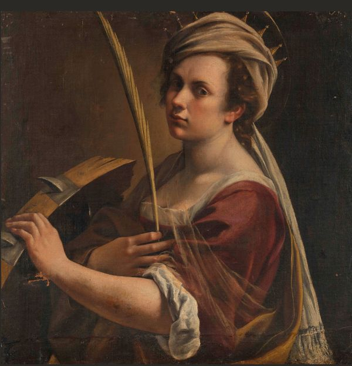
As bought, 2018: the photograph published at the purchase.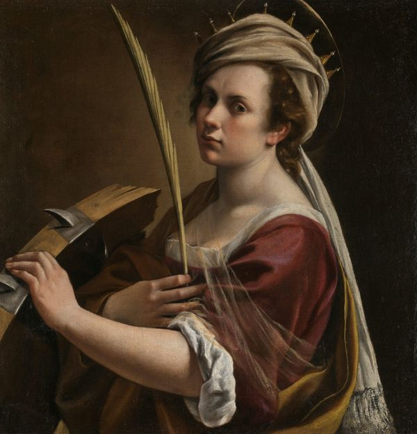
After the 2018 treatment. Some of the difference is the photography.Who the painting was for, and whether you or a client decided to make it a Saint Catherine. Whether the shape under the wheel was a book, a tablet or something else, and how far you painted it. How the design reached the canvas: no transfer lines have been found. The order of the changes: the cloth on the chest, the sleeve, the book, the wheel, the crown, the halo and the palm. Which of the London and Uffizi figures came first, or whether both came from one cartoon. Where the painting was for some three centuries, including 1933–45. The two studies at the heart of this guide, the National Gallery's Technical Bulletin article and the Opificio's report, were known here only through the Gallery's 2024 catalogue entry and the press.